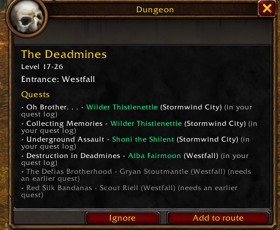
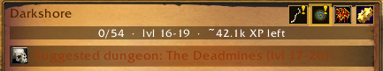

When a dungeon fits your level and faction, the dungeon button of the tracker glows and an alert suggests it. Its window gives the entrance and the quests to pick up before you go, with their givers.
Quests already in your log are marked; greyed ones need an earlier quest. “Add to route” adds the quests to pick up in town, the entrance and the turn-ins to your route.
Dwarf shaman, level 19: The Deadmines.

